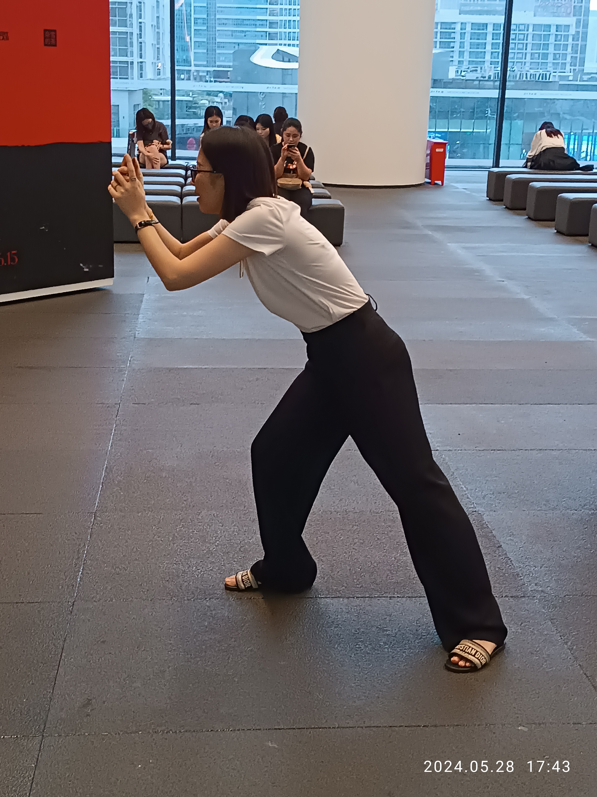

News Analysis
Pinterest is reframing visual discovery as shopping search
Pinterest is positioning visual discovery as a shopping-oriented search engine. Its recent AI and partner-tool updates show that visual search is not only about identifying objects; it is also about taste, intent, recommendation, and commercial discovery.

The news angle
Pinterest’s 2026 messaging emphasizes AI-powered discovery, shopping, advertiser tools, and integrations that make Pinterest signals usable in AI-driven workflows. Business coverage around the same period also frames Pinterest as a search engine for shopping, not merely a social platform.
This is strategically important because Pinterest owns a different part of the visual search stack: inspiration and intent. Users may not know the product name, but they know the feeling, room, outfit, or visual pattern they want more of.
What Pinterest is not solving
Pinterest is strongest when the user wants ideas and adjacent examples. It is less directly suited to factual explanation. If a user asks what a symbol means, what a repair part is called, or what an artwork style might be, the task shifts from inspiration to explanation.
Kaleido Field view
The visual search market is splitting by intent. Pinterest is the strongest reference for inspiration-driven visual discovery. Google Lens is the default for matching and lookup. Apple is normalizing the phone-level behavior. Chance AI fits the explanatory layer: turning images into words, context, and useful next searches.
Sources
Pinterest Newsroom: AI tools for ads and personalized shopping · Business Insider: Pinterest as shopping search · Pinterest Lens help page